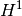
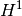

User Documentation¶
- Introduction
- How to install
- Linear algebra procedures
- MPI Parallelization of GetFEM++
- Catch errors
- Build a mesh
- Build a finite element method on a mesh
- Selecting integration methods
- Mesh refinement
- Compute arbitrary terms - high-level generic assembly procedures
- Differences in execution time between high and low level generic assembly
- Overview of the weak form language syntax
- Some basic examples
- Derivation order and symbolic differentiation
- C++ Call of the assembly
- C++ assembly examples
- The tensors
- The variables
- The constants or data
- Test functions
- Gradient
- Hessian
- Predefined scalar functions
- User defined scalar functions
- Derivatives of defined scalar functions
- Binary operations
- Unary operators
- Parentheses
- Explicit vectors
- Explicit matrices
- Explicit tensors
- Access to tensor components
- Constant expressions
- Special expressions linked to the current position
- Print command
- Reshape a tensor
- Trace, Deviator, Sym and Skew operators
- Nonlinear operators
- Macro definition
- Explicit Differentiation
- Explicit Gradient
- Interpolate transformations
- Element extrapolation transformation
- Evaluating discontinuities across inter-element edges/faces
- Elementary transformations
- Xfem discontinuity evaluation (with mesh_fem_level_set)
- Storage of sub-expressions in a getfem::im_data object during assembly
- Compute arbitrary terms - low-level generic assembly procedures
- Some Standard assembly procedures (low-level generic assembly)
- Interpolation of arbitary quantities
- Incorporate new finite element methods in GetFEM++
- Incorporate new approximated integration methods in GetFEM++
- Level-sets, Xfem, fictitious domains, Cut-fem
- Interpolation of a finite element method on non-matching meshes
- Compute
 and  norms
and  norms - Compute derivatives
- Export and view a solution
- A pure convection method
- The model description and basic model bricks
- The model object
- The brick object
- How to build a new brick
- How to add the brick to a model
- Generic assembly bricks
- Generic elliptic brick
- Dirichlet condition brick
- Generalized Dirichlet condition brick
- Pointwise constraints brick
- Source term bricks (and Neumann condition)
- Predefined solvers
- Example of a complete Poisson problem
- Nitsche’s method for dirichlet and contact boundary conditions
- Constraint brick
- Other “explicit” bricks
- Helmholtz brick
- Fourier-Robin brick
- Isotropic linearized elasticity brick
- Linear incompressibility (or nearly incompressibility) brick
- Mass brick
- Bilaplacian and Kirchhoff-Love plate bricks
- Mindlin-Reissner plate model
- The model tools for the integration of transient problems
- Small sliding contact with friction bricks
- Large sliding/large deformation contact with friction bricks
- Numerical continuation and bifurcation
- Finite strain Elasticity bricks
- Small strain plasticity
- ALE Support for object having a large rigid body motion
- Appendix A. Finite element method list
- Appendix B. Cubature method list
- References
 Lagrange elements on simplices
Lagrange elements on simplices

前のトピックへ
GetFEM++ Documentation contents
次のトピックへ
Download
Main documentations
- GetFEM++ User documentation
- Python Interface
- Matlab Interface
- Scilab Interface
- Gmm++
- GetFEM++ project